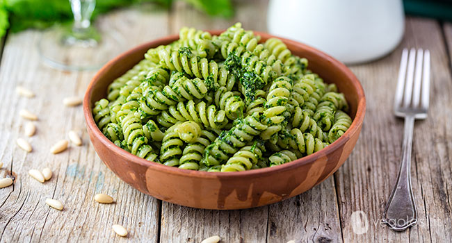

Pesto Pasta

Delicious Pesto Pasta
Pesto pasta is a simple dish that you can whip up in a matter of minutes. It is also a versatile dish that you can work with by adding chicken, making it creamy or more. Whether you are short on time or you want a simple appetizing meal, follow this recipe to get exactly what you need.
Ingredients
- 1 (16 ounce) package pasta
- 2 tablespoons olive oil
- 1/2 cup chopped onion
- 2 1/2 tbsp pesto or more to taste
- Salt
- Black pepper
- 2 tbsp grates Parmesan cheese
Steps
- Gather all ingredients
- Fill a large pot with lightly salted water and bring to a boil. Stir in pasta and return to a boil. Cook pasta uncovered, stirring occasionally, until tender yet firm to the bite, about 8 to 10 minutes. Drain and transfer into a large bowl.
- Meanwhile, heat oil in a frying pan over medium-low heat. Add onion; cook and stir until softened, about 3 minutes.
- Stir in pesto, salt, and pepper until warmed through.
- Add pesto mixture to hot pasta; stir in grated cheese and toss well to coat.
Home